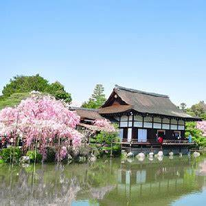
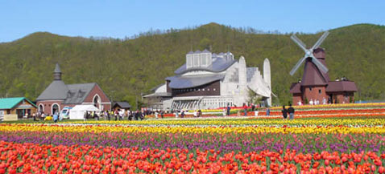

旅遊記實
春遊京都-賞櫻行

雖然早已安排好今年夏天要去北海道,豈科這次公司旅遊又安排了京都賞櫻之旅,兩次旅遊相隔不過兩個月,
今年還真是有日本緣啊!說來到日本賞櫻不是第一次了,上次賞櫻的地點是東京的上野公園,而且運氣不錯正好遇到滿開時,
但也因此見識到
日本人對賞櫻的熱衷，每株櫻花樹下坐無虛席，人潮之多著實讓我嚇了一跳。而這次則是來到日本的古都－京都。
雖然日本去了不下十回，但大多是在東京大阪這些大城市旅遊，京都還真的是第一次去呢。
既然是第一次,免不了要好好做功課,京都不愧是古都,賞櫻的景點中寺院便占多數,從清水寺 醒醐寺
仁和寺...等,不過有一處非寺院的景點特別引起我興趣,叫做哲學之道,非常適合我這種文清的名字啊!
夏遊北海道-百花遊

夏季是富良野和美瑛地區的旅遊旺季，花季繽紛的測採點綴了整片農場，總是吸引了許多人潮。
JR北海道通在每年6月中旬至9月下旬，會因應賞花季節加開「富良野薰衣草特急」可由札幌直達富良野。
而旭川到富良野之間的富良野線上也會加開「富良野‧美瑛慢車號」，在「薰衣草花田」站就可以抵達富田農場唷！從薰衣草花田車站到富田農場步行約7-8分鐘。